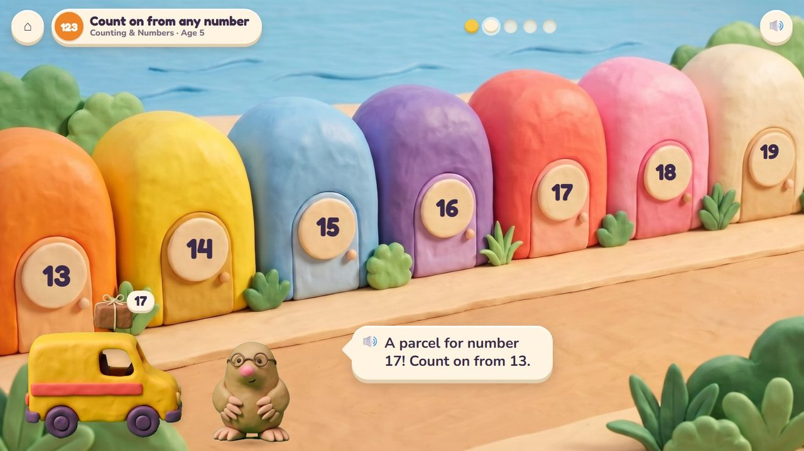
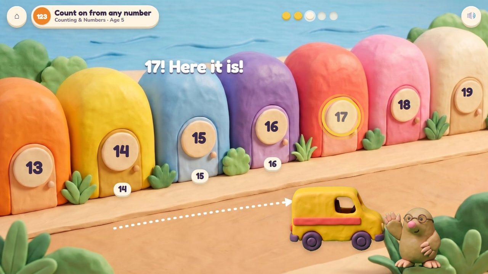
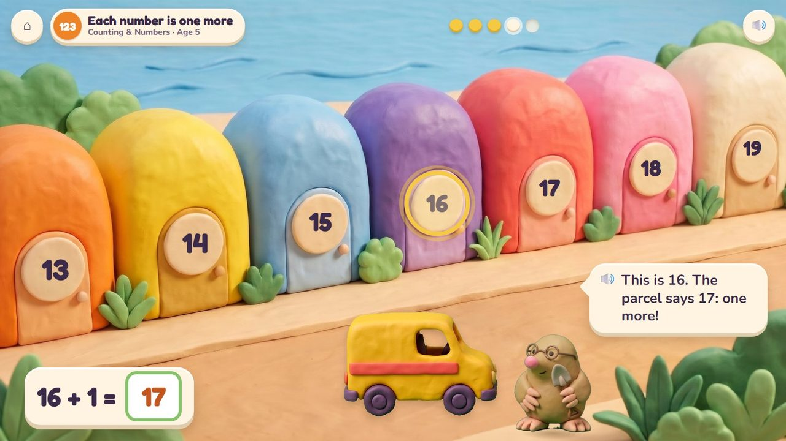
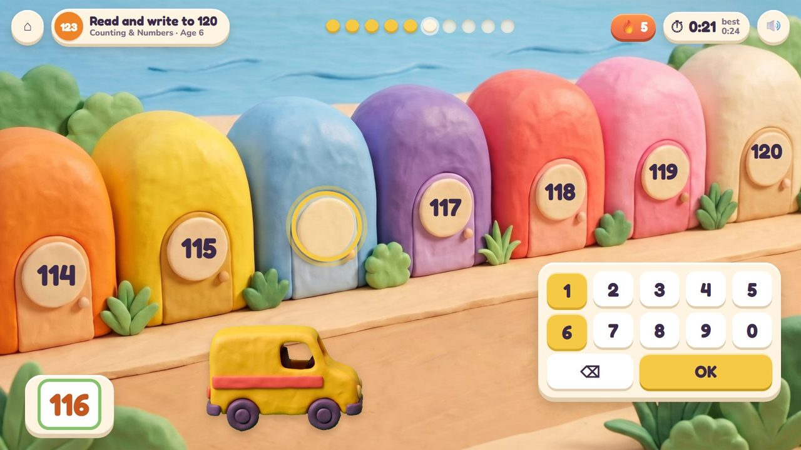
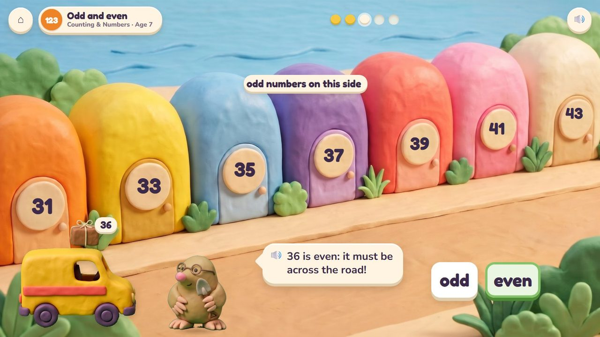
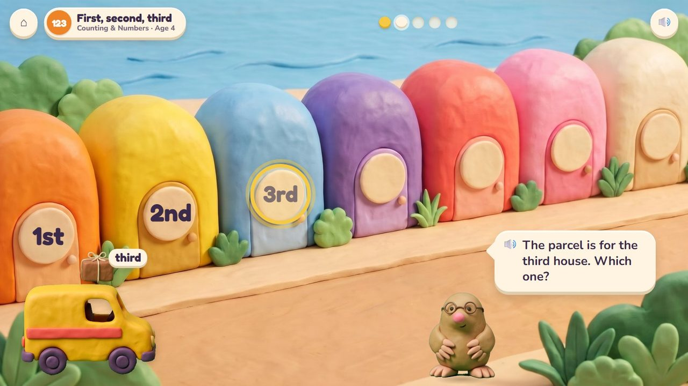

Digsy's van delivers parcels along the promenade: find the house by its number.
14 lessons (11 taught here first, the rest practised here) in 3 topics:
Counting & NumbersPlace ValueMeasuring

The houses on the promenade are numbered in order. Digsy reads the parcel's label and the child drives the van to the right door: counting on from the first house, one more, the blank plate between two numbers, odd numbers on one side of the street and even on the other, first, second and third. A wrong door is no trouble: Digsy points the way.
Drive the van (drag); tap a door; type the number on a blank plate.
Every house opens its parcel: a surprise inside.
A storyboard of the game in one lesson, drawn from the app's own clay pictures.
Count on, age 5: the street starts at 13.
🔊 “A parcel for number 17! Count on from 13.”

14, 15, 16… 17! Here it is.

This is 16: one more is 17.
🔊 “This is 16. The parcel says 17: one more!”

Age 6: a blank plate between 115 and 117: type 116. Timed.
The van stops at a house with a blank plate: type its number. Ten questions at 6-7, a 60-second round from 8; your time and your best on screen; only right answers count; a miss shows the answer and comes back later. No clock under 6.
The badge at the top left says the topic, the lesson and the age.

Odd numbers on this side: 36 is even, so it goes across the road.

The parcel is for the third house: which one?
| Age 4Pre-K | What comes next? First, second, third. |
| Age 5Kindergarten | Count to 20; count on; each number is one more; compare numbers to 10. |
| Age 6Grade 1 | Count and read to 120; count on and back; 10 more and 10 less (the next street). |
| Age 7Grade 2 | Count within 1000; odd and even sides; compare three-digit numbers; numbers on a number line. |
first, second, third at 4; to 20 at 5; to 120 at 6; to 1000 at 7
one by one, odd and even sides, the next street is ten more
Digsy counts the doors aloud; after a miss he points the way
driving and tapping; the number pad for the quick round
Age by age they are on the full list; here grouped by topic (the first activity named teaches a lesson, the others practise it).
early yearsParcel Post · Poke Palsearly yearsParcel Post · Poke PalsK.CC.1Parcel Post · Poke PalsK.CC.2Parcel Post · Number LiftK.CC.4Parcel Post · Poke PalsK.CC.7Seesaw Twins · Parcel Post1.NBT.1Parcel Post · Number Lift1.NBT.1Parcel Post · Number Lift1.OA.5Parcel Post · Number Lift2.OA.3Raft Rescue · Parcel Post2.NBT.2Parcel Post · Number Lift1.NBT.5Parcel Post · Number Lift2.NBT.4Number Lift · Parcel Post · Seesaw Twins2.MD.6Parcel Post · Kart Cup · Number Lift